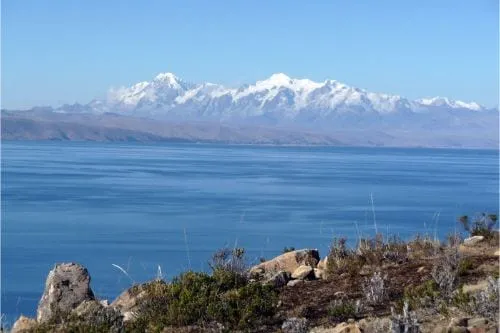
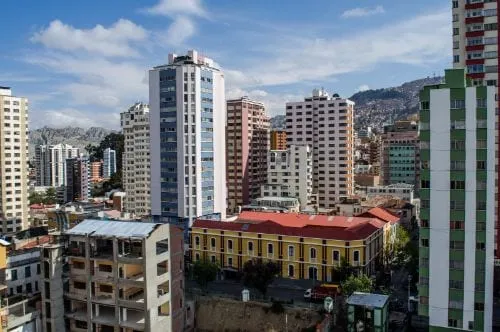
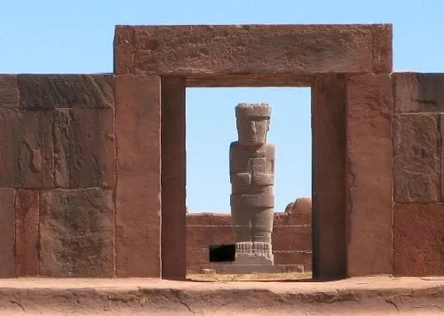

TurismoON: una página para tu paraíso
1-Lago Titicaca (La Paz)
El Lago Titicaca es la masa de agua navegable con mayor altura en todo el mundo, ya que se encuentra a más de 8 mil kilómetros sobre el nivel del mar, cerca del pueblo de Copacabana. Es un lago realmente lleno de vida, en donde se pueden encontrar especies que sólo habitan en esta zona altiplana.
En torno al lago se ha desarrollado una cultura milenaria, de hecho se han encontrado registros de la cultura Chiripa a través de vasijas y esculturas, que dan cuenta del desarrollo que alcanzaron estas sociedades autóctonas, siendo uno de los sitios arqueológicos de Bolivia.
Las obras textiles de su Isla Taquile, fueron nombrabas Patrimonio Mundial de la Humanidad por la Unesco en 2005. En el lago puedes pasear a bordo de un “Caballito de Totora” y por las mañanas disfrutar de un amanecer espléndido.
2-La Paz
La Paz es la capital de Bolivia, la que tiene mayor altitud en el mundo y la que concentra las sedes de los Poderes del Estado, el centro cultural y económico del país. Convirtiéndose en uno de los destinos para visitar en Bolivia que no te puedes perder.
En esta ciudad se encuentran importantes lugares como la Basílica de San Francisco o la Catedral Metropolitana; también posee el teleférico urbano más alto y largo de todo el mundo, que se encarga de unir La Paz con El Alto, inaugurado en 2014. También es de resaltar que esta ciudad es considerada una de las 7 ciudades maravillas del mundo.
3-Tiahuanaco (Departamento de La Paz)
Ubicada a tan solo 15 kilómetros del Lago Titicaca, la ciudad de Tiahuanaco es conocida como uno de los tractivos culturales de Bolivia por ser un centro espiritual y cultural considerado Patrimonio Mundial de la Humanidad por la Unesco.
Es un asentamiento en donde se ha hallado numerosas edificaciones precolombinas, que dan cuenta del desarrollo de las poblaciones originarias; muestra de ello es la pirámide de Akapana o el Templo Kalasasaya, el Palacio de los Sarcófagos o las ruinas de Pumapumku.
Este lugar también ha alimentado el tesoro arqueológico de Bolivia, con innumerables vasijas y esculturas.
Página creada por Sergio Delgado
Urbe 2020
Urbe 2020